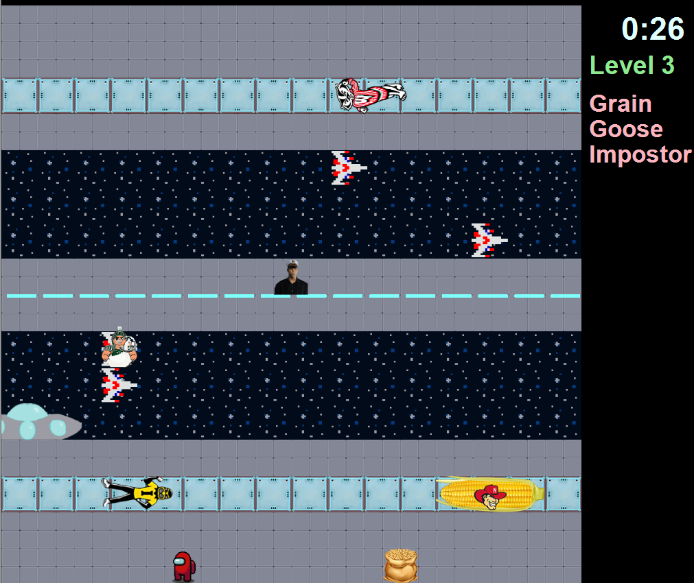
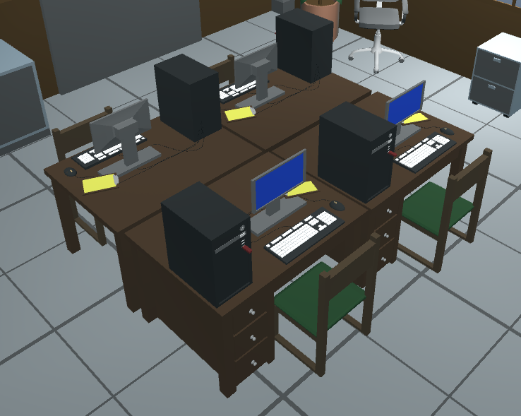

Projects

As I develop games as personal or group projects, I'll update this page to show off presentable work. I want to use this page to present the projects which I'm most proud of and those that were particularly challenging for me.
- 
-
- Game Jam
-
This game was made for a project in WRA 101 that allowed me to use any medium to express themes from an earlier paper. This game puts the player in the setting of a game jam. They are tasked with delegating tasks to the teammates with the right skills.
While not very entertaining as a game, this project involved a lot of new kinds of technical work for me, especially with UI programming.
-
- Unpopular Opinion
-
Unpopular Opinion is my group's work for one of the first game jams I particpated in, which was hosted by Spartasoft in the fall of 2019.
This game juxtaposes comedic dialogue with eerie theme and music.
-
- Sparty Crossing
-
This game was a group project I worked on in CSE 335. It was made using just C++ and without a game engine. We put a lot of effort into this and I think we went above and beyond with our extra features which are included in the final level.
-
- 2D Shooter
-
This is a quick 2D shooter I made as a part of an assignment in the class CAS 117. In this project, I followed a tutorial and was tasked with making modifications to the end result. This project was one of many that gave me the chance to learn more about level and enemy design.